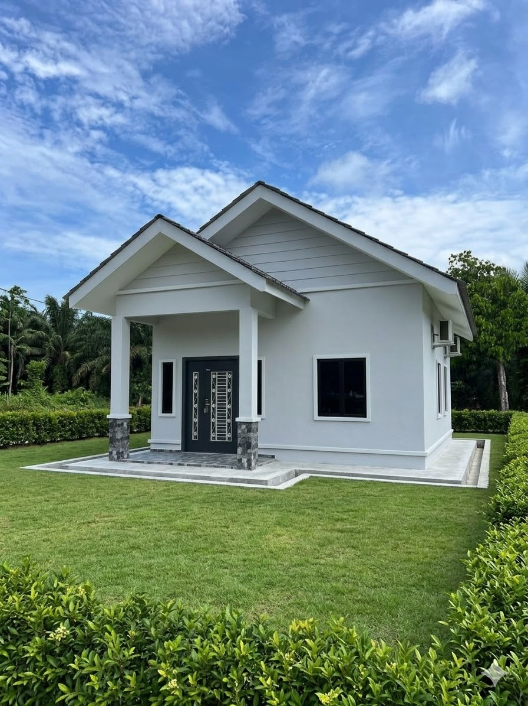
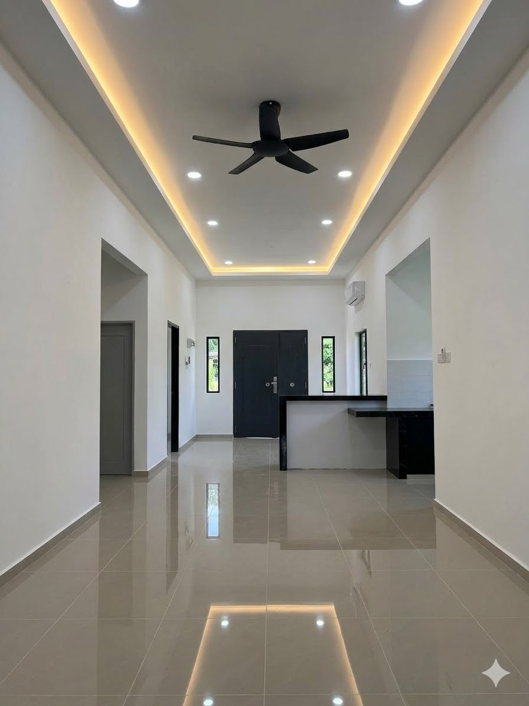
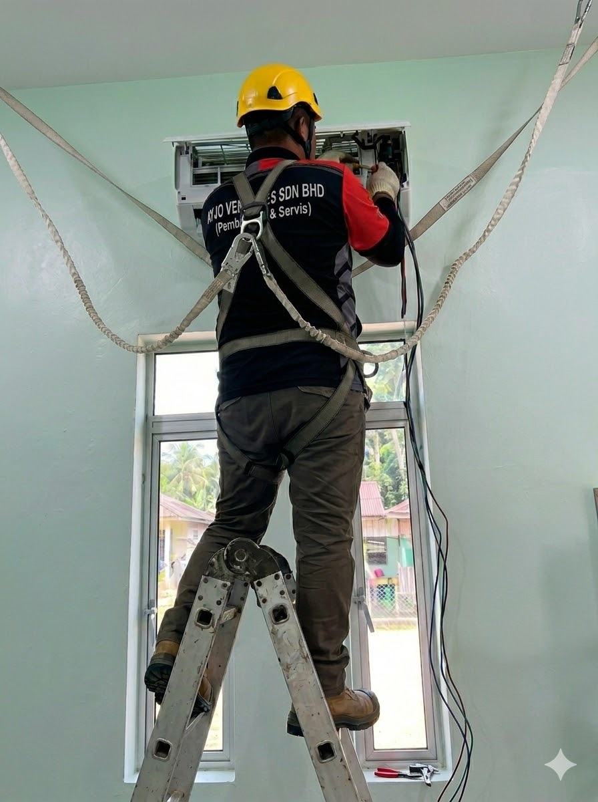
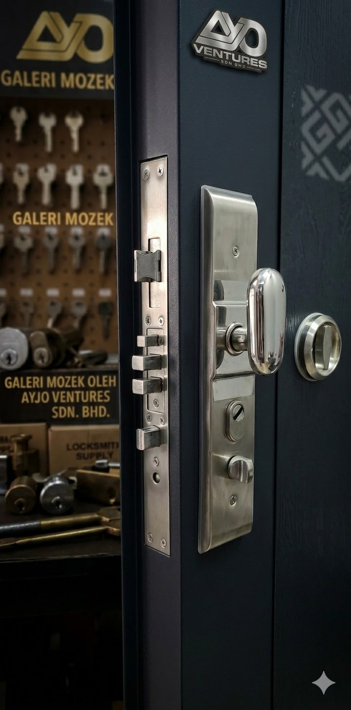
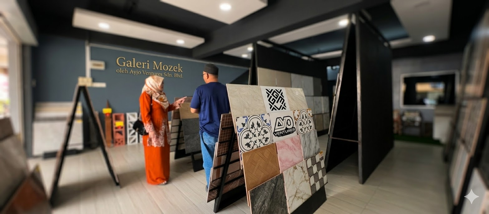

Kualiti hasil kerja pembinaan rumah yang dijamin memuaskan, telus, dan sistematik



Meskipun ditubuhkan secara rasmi pada 24 Julai 2024, tunjang kekuatan Ayjo Ventures Sdn. Bhd. sebenarnya disandarkan atas paksi pengalaman industri yang amat matang selama lebih 20 tahun. Hari ini, kami melangkah setapak lagi sebagai entiti pembinaan Bumiputera yang komited dalam menyediakan servis reka, bina, dan renovasi bertaraf profesional.
Kami percaya bahawa sebuah rumah bukan sekadar struktur dinding dan bumbung, tetapi merupakan sebuah impian besar yang membawa nilai dan kebahagiaan tersendiri bagi setiap keluarga. Oleh itu, setiap projek yang diamanahkan kepada kami—sama ada pembinaan banglo eksklusif mahupun kerja ubah suai ruang—dikendalikan berasaskan prinsip ketelusan dan kualiti hasil kerja yang dijamin memuaskan.
Dipandu oleh barisan pengurusan tertinggi yang berpengalaman serta disokong oleh pasukan teknikal, pelukis pelan, penyelia tapak, dan tukang mahir, kami menawarkan ekosistem pembinaan yang sangat sistematik. Melalui pemantauan yang rapi dan penyampaian kemajuan kerja berkala secara telus, kami memastikan setiap fasa projek berjalan lancar mengikut jadual yang ditetapkan.
Kami bukan sekadar tukang rumah biasa—kami adalah rakan strategik yang komited dalam membina kelestarian kediaman idaman anda, daripada lakaran pelan pertama sehinggalah hari penyerahan kunci.

Rekod Prestasi & Pengalaman Melebihi 20 Tahun
Dengan kepakaran meluas yang merangkumi reka bentuk pelan, pembinaan rumah dari sifar, kerja-kerja ubah suai struktur, sehinggalah sistem pendawaian elektrikal yang rumit, kami menyediakan ekosistem perkhidmatan yang lengkap.
Keunikan kami terletak pada sistem pemantauan tapak yang sistematik serta penyampaian kemajuan kerja yang telus kepada pelanggan. Malah, disokong oleh anak syarikat kami, Galeri Mozek Ayjo Ventures, kami mempunyai akses terus kepada bekalan jubin seramik dan kemasan dalaman premium tanpa bergantung kepada pihak ketiga.
Sama ada anda ingin membina banglo impian di atas tanah sendiri, menaik taraf ruang pejabat, atau memerlukan penyelenggaraan elektrikal yang selamat, pasukan pakar kami sedia merealisasikannya dengan hasil kerja terbaik yang dijamin memuaskan.

Kenapa Pilih Kami
Walaupun ditubuhkan sebagai Sdn. Bhd. pada tahun 2024, barisan pengurusan dan pasukan teknikal kami disokong oleh trek rekod matang melebihi dua dekad dalam industri pembinaan bangunan.
Setiap fasa kemajuan kerja di tapak dipantau secara rapi dan disampaikan secara telus kepada pelanggan, memastikan projek berjalan lancar mengikut jadual yang ditetapkan.
Kami percaya setiap bangunan membawa nilai dan impian tersendiri. Kami komited menggunakan kaedah serta bahan binaan berkualiti tinggi demi mencapai kepuasan pelanggan yang maksimum.
Melalui anak syarikat Galeri Mozek Ayjo Ventures, kami membekal dan memasang jubin seramik, kelengkapan tandas, serta pintu keselamatan premium terus tanpa kos orang tengah.
Email: hq@ayjo.my
Alamat: No. 3 & 3A, Jalan Warisan 1, Taman Warisan Peserai, 83000 Batu Pahat, Johor.